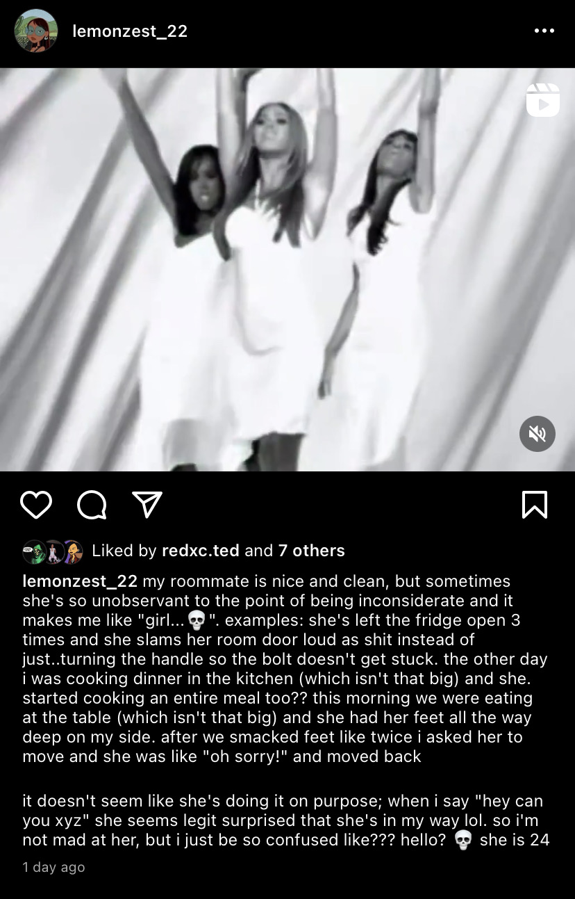

Before I begin: First blog (online diary, really) post yaaayyy! Let's celebrate that.
Now on to what's up. So, my roommate left pee in the toilet today. She leaves pee in the toilet a lot. Usually I ignore it because I'm using the bathroom when she's asleep and, frankly, I don't want to have to endure the "you left pee in the toilet" conversation. But today, it was especially gross and also the right time to say something, as she was watching TV in the kitchen. At first, I saw (AND SMELT) the pee and just refused to use the bathroom, but I really had to go. So after about 45 minutes of stewing I awkwardly walked in the kitchen and feebly said "h-hey, you left pee in the toilet."
"No..."
No?? She asked "I left what?" and I just repeated what I said louder cause she seemed confused. And she continued to be like "No that wasn't me." I'm a soft-spined mess but I'm not gonna take the blame for leaving piss in the toilet, so I said "No I haven't peed since about 6 this morning." Even though this was less than 30 minutes ago I can't remember exactly what was said, but our words awkwardly jumbled and on the other side of it was her saying "Did you leave today?"
Huh?
I said yeah, around 8, because I did. I was so confused at that point. More jumbling of words featuring a healthy dose of "I know I pushed the button.." and "Maybe.." It ended with her not offering to flush her pee and me more confused about what her stance on this was. So I was just like "Yeah when you flushed you probably didn't push the button down enough." I went to leave and I heard the clearest thing she said in the entire conversation, "I'm sorry!" I turned around and was like "It's okay, I just wanted to let you know. I don't think you did it on purpose [chuckle]." I still had to flush her pee.
The point of this is..this girl (woman? she's 24) Confuses Me So Much. As I described here

she can be so unobservant and inconsiderate but it doesn't seem to come from a malicious place. She doesn't seem flighty/airheaded either. I don't get it. It does irritate me, but when I speak up she seems to be genuinely apologetic for bothering me in whatever way so I rarely stay mad at her for long. I just don't get it at all; I can't parse it for the life of me. I mean, just this morning she decided to turn over a moldy orange instead of.....throwing it away........
I'm just so flabbergasted. Is it cultural differences? Does she just not give a fuck and is putting on a good face? Is she manipulative? Is she neurodivergent? Is she stupid? What's happening?? Why is she like this?!
October 30, 2022
"I didn't know you were around"
So i'm trying to go to sleep because today has left me exHAUSTED, right? Me, Seren, and Amy-Claire went to Marseille and were basically walking for the entire 6 hours we were there— I was a sweaty mess when I got back.
So I'm trying to go to sleep. I achieve that, but then, deep in sleep, I'm awoken by........Ernestina singing operatic-like pieces in an awful soprano. Jesus man. I had to take a second to really confirm what the hell I was hearing first, and then I was equal parts confused, flabbergasted, and annoyed because last night she was on the phone until midnight and kept me up. Ididn't say anything because she wasn't loud at all; it was really a me issue. Either way, I wasn't going to have a repeat — I got maybe 5 non-consecutive hours of sleep that night.
I go to her door and say "Hey, can you sing a little quieter so I can go to sleep?" In usual fashion she seems genuinely surprised to be in my way and says "Oh, I didn't know you were around."
Bruh what?? It is 11pm. I've been gone literally since the sun came up but I have been back for three or four hours. Not just in my room, mind you. I took a shower, loudly opened
and closed the window in the room for said shower, heated and ate dinner. Hell, when I came in I was obnoxiously jingling my keys because I had to sprint to the bathroom before completely
peeing on myself (Side note: I have not been able to hold my pee correctly the last couple days...???). She's come out of her room during these events! What does she mean she didn't
know I was around?? As someone who relies on the buses for transportation, WHERE ELSE WOULD I BE AT 11PM? HELLO??? She has to be stupid or lying at this point because it's getting
genuinely ridiculous 😭 how can someone be this unaware of their surroundings.
Like..am EYE tripping??
November 12, 2022
The long one.
Okay, this is going to be a long one. I need to lay my feelings out about my roommate because it's causing me a bit of mental conflict. Like it's to the point where I was just laying all this out in my mindspace as if I was having an IRL convo with a friend. I don't really like my roommate, I think she's bizarre, but I don't know if the dynamic between us is more my fault or her fault. I also don't know cultural differences play a large part because I'm not sure which behaviors even are cultural and which are just her being weird. Here we go.
So my primary issue is that she just irritates me a lot. Disclaimer 1: Because I know jack shit about her (like she is a stranger and we've been living together a month and a half), the irritating parts are all I know. As such, the irritation I feel from what she does isn't balanced out by any possible context that could make me understand why she does things. Unlike with literally any other stage of knowing someone, there's no connection there to temper my annoyance. Disclaimer 2: I tend to be a bit anal when it comes to living with others (why? I dunno). Meaning, I can get severely annoyed by things like dirty counters, chairs that aren't pushed in, etc.
Okay, let's begin at the beginning. She's generally nice and cleans up after herself, but beyond that, I don't know anything about this girl. I didn't even know how old she is (24) until a couple weeks into living here. She's not exactly standoffish, but aggressively neutral; as if she just wants this to be a "we happen to live in the same place" situation. Which is fine! I have friends at home and a couple girls I hang out with in Avignon so I'm not starved for social activity. But with this aggresive neutrality there's no foundation for our interactions...leading to what I described above. For example, when we first moved in she wasn't very talkative. Understandable. I've heard thst Americans are seen as very/overly friendly, so I figured it was just a cultural or even personality thing. However, we never broke through that weird stage because she seemed completely uninterested. Our conversations were transactional; I'd make a comment about something, and she'd respond. No follow-up. She'd ask me a question like "do the buses run on Sundays?" and I'd answer. I'd give a follow-up and she'd give a very minute response. Conversation dies. So after a while I just stopped trying to talk to her. Which, again, fine with me but it did make me iffy towards her — especially when she started talking on the phone and I'd hear a COMPLETELY different personality come out. Not gonna lie I was a bit put off and it made me raise an eyebrow as to why she was so different with me. But whatever.
Another foundational factor in how I feel about her came from her being Loud As Fuck at all hours of the day and night. Our apartment is echoey, and things can sound louder than they actually are, so I really try to take that into consideration, but sometimes she's genuinely just Loud As Fuck. Example: our bedroom doors are the type where you have to turn the handle before closing, or the bolt will get stuck on the door frame and you have to slam it to close it. Guess what she chose to do whenever she had to pee. Every night. Anywhere from 3-6:00 AM. Yeah. I already hate unnecessarily loud shit, so this pissed me off so much that I chose not to say anything. I was ready to actually put my hands on her and I didn't want to come at her crazy for something she probably wasn't doing on purpose. She stopped doing it (as much) weeks in but the die had been cast, so to speak. With that foundation, other Loud As Fuck stuff she did pissed me off even more. Talking Loud As Fuck on speakerphone. Slamming her dishes into the sink when washing them. Dropping the toilet seat Loud As Fuck when using the bathroom. She moves around like a toddler that hasn't learned fine motor skills.
In addition to that, there's also smaller things that have annoyed me. She doesn't say excuse me. For a while she would frequently leave piss in the toilet. She makes our shower rack unbalanced with where she puts her soap (see pic below). She's left the fridge open three times. She plays stuff on her phone out loud when I'm watching TV, and even turns her stuff up LOUDER when my stuff is disturbing her (has she never heard of the 1 speaker user 1 headphone user rule????). She leaves her chair out to the point where it's in the walkway. In the midst of my extensive suffering from the dust blowing through the air when we first moved in, I asked her, while sniffling, "Have you noticed that the apartment is really dusty?" In response, she said, "No." Literally didn't even lift her head up to look at me to respond. That pissed me off a LOT, especially since she'd also been sneezing all over the place. When we were sitting at the table once, she didn't notice her feet were entirely on my side even though we had smacked feet a couple times. Once, she was singing at the top of her lungs at 11 PM — when I asked her to stop, she said she didn't know I was home. I had been there for 4 hours, and had cooked and showered. At first, I thought she was stupid, but she doesn't give that vibe. Then I thought she was doing it on purpose, but she has no reason to and she always seemed genuinely apologetic when I would say something. So far I've just settled on her being ridiculously unobservant and maybe cultural things. Either way, it's annoying.
There's also weird things. Like how she doesn't flush her used toilet paper; she puts it in the trash. She fries shit and eats it at 8 AM. When I started singing around the apartment, so did she. She left a moldy orange in the fruit bowl and turned it to the non-moldy side instead of throwing it away (IDK if she ate it or tossed it, but it eventually disappeared). She talks on the phone ALL DAY. She never closes the apartment door (it doesn't lock so it's NBD, but...) yet she always closes the kitchen door. She closes her door and locks it any time she's in her room, and whenever she leaves to even go to the bathroom, she shuts it tight.
Notice now how all these things are building up. All I know about her as a person is that she gets on my nerves, and she does some weird shit to boot. At this point, on November 12th, 2022 at 9:30 PM, I don't like her, and these things are why. Now some of these may be me being uptight — hell, all of it could be. But that's why I'm writing this, to parse out why I feel this way. At the point we're at now, and honestly maybe as a result of these now very strong feelings, it's really awkward and tense when we're in a room together. I generally don't say anything to her unless she says hi (but when I say hi she is silent???????). I dunno if she feels it too, but I suspect she does because I've noticed that recently, whenever I'm in the kitchen (the only common area in the apartment), she doesn't linger for long. (Note: I'm kind of enjoying this. It means I get to enjoy Not Being In My Room while also not being inconvenienced by her assault on my senses). This could be because of me, because of my silence and the fact that I do get physically tense when she's around, but who knows. The tenseness isn't really a huge issue, though. It's the idea that everything leading up to it could be my fault. Now that I've written all this out, I don't think so, but the musing is still at the back of my mind.
Now that that's out, let's get petty.
Things that annoy me that I know for certain are a Me Problem:
Her voice. I hate hearing her talk on the phone. I don't know if it's because she as a person irritates me, or if it's because I have some strange xenophobic hate for the Ghanaian language, or if it's because her exclamations are Just That Annoying.
Her singing. Again, don't know if it's her as a person, if I have a xenophobic hatred for the way Ghanaians sing, or if she's just an awful singer. Nonetheless, I don't want to hear it.
She watches Friends and The Big Bang Theory. Dubbed in French. Every day. And she enjoys it. Psychopathic, I know.
Things that annoy me that I know for certain are a Her Problem:
She's homophobic. Ironically, one of the few times she was on the phone in English, she went on a whole nasty-spirited rant making fun of this Ghanaian girl who's a lawyer and pansexual. Memorable quotes include such bangers as "She is part of the (highly confused tone) LG..B...T" and "LGBT is not illegal in Ghana but she shouldn't be so loud about it."
She doesn't wash her hands when she uses the bathroom. Remember when I said the apartment is echoey? Yeah. I can hear everything, including her peeing. You wanna know what I never hear? Water running. Also, today actually, I witnessed her piss then go straight to the fucking kitchen. Yeah. Oddly enough, though, I think this bothers me the least out of everything (it's still nasty as all fuck).
She said "when you have kids" to me instead of "if you have kids" one day. Yuck. I'm not putting this in the above list because her being homophobic combined with this means she almost certainly thinks it's weird to not want kids. Yuck.
In conclusion, Jesus Fucking Christ. In writing this novel, though, I do think I've answered my own questions:
Do I like her? No. I actively dislike her, in fact. She gives me absolutely nothing else to work with but highly irritating, nasty, weird, or generally off-putting behavior. Still better than Living With Jessi, though.
Am I the problem or is she? A bit of both, but overall she's the weird one. I may have off vibes or whatever now, but she is emphatically the one who caused it. I'm not a mean bitch like I had been afraid of.
So, yes. I don't like this girl (woman. lady, even). However, this ending is good in my eyes because I'm clear of the mental and emotional constipation. I feel like I've untied the biggest of knots. I'll still post this to #MyBlog, though, for posterity and just in case I turn out to be wrong. Either way, I'm happy for now and can freely enjoy Wakanda Forever tomorrow. Yay!